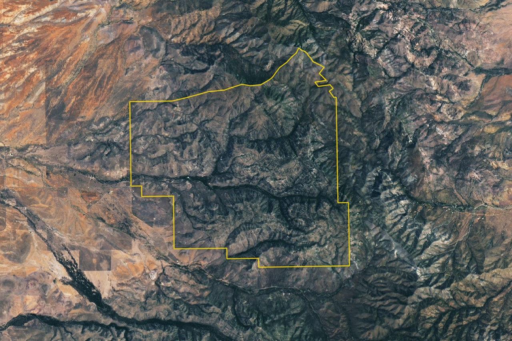

01
Ao vivo: Vasco x Flamengo | Rodada 33 | Campeonato Brasileiro
ge · 28/10/2026 · 08:31 (Brasília)Fonte original ↗
 noticias.uol.com.brGoverno Lula traça cenários com Flávio nos EUA: tarifas e sanções no radar
noticias.uol.com.brGoverno Lula traça cenários com Flávio nos EUA: tarifas e sanções no radar https://www.thetraveler.org/UK Foreign Office renews stark Middle East travel warning
https://www.thetraveler.org/UK Foreign Office renews stark Middle East travel warning www.naval.com.brNavantia lança segunda fragata F110 da Espanha com quatro meses de antecedênciawww.msn.comBCE alerta para risco de “bolha” da inteligência artificial
www.naval.com.brNavantia lança segunda fragata F110 da Espanha com quatro meses de antecedênciawww.msn.comBCE alerta para risco de “bolha” da inteligência artificial www.modernghana.comRussia-Africa Summit 2026: 48 Countries, 22 Presidents, One Big Begging Bowlindianexpress.com75,000 Palestinians killed; Israel continues genocide despite ceasefire: UN probe panelBBC Sky at Night MagazineO cometa interestelar acaba de nos aproximar dos nossos vizinhos galácticos – a química 3I/ATLAS revelou algo muito especial sobre o nosso Sistema SolarJornal da USPProjeto investiga algas do Atlântico Sul e da Antártida para compreender mudanças climáticasThe AustralianA panela de inflação trabalhista está fervendo
www.modernghana.comRussia-Africa Summit 2026: 48 Countries, 22 Presidents, One Big Begging Bowlindianexpress.com75,000 Palestinians killed; Israel continues genocide despite ceasefire: UN probe panelBBC Sky at Night MagazineO cometa interestelar acaba de nos aproximar dos nossos vizinhos galácticos – a química 3I/ATLAS revelou algo muito especial sobre o nosso Sistema SolarJornal da USPProjeto investiga algas do Atlântico Sul e da Antártida para compreender mudanças climáticasThe AustralianA panela de inflação trabalhista está fervendo www.middleeasteye.netA mobilização dos eleitores palestinos é um “desenvolvimento verdadeiramente histórico”, diz analista
www.middleeasteye.netA mobilização dos eleitores palestinos é um “desenvolvimento verdadeiramente histórico”, diz analista Scripps NewsOs presidentes são responsabilizados pela economia. Um novo relatório argumenta que Trump realmente merece.https://www.thetraveler.org/UK Tightens Middle East Travel Advice Amid Rising Tensionswww.msn.comPelo menos 30 pessoas morrem na Espanha após colisão entre dois trens de alta velocidade
Scripps NewsOs presidentes são responsabilizados pela economia. Um novo relatório argumenta que Trump realmente merece.https://www.thetraveler.org/UK Tightens Middle East Travel Advice Amid Rising Tensionswww.msn.comPelo menos 30 pessoas morrem na Espanha após colisão entre dois trens de alta velocidade www.msn.comChina afirma que leva a sério pedido de desculpas de MbappéEgyptian GazetteChefe da Comissão da UA: África utiliza apenas 6% das suas terras aráveis
www.msn.comChina afirma que leva a sério pedido de desculpas de MbappéEgyptian GazetteChefe da Comissão da UA: África utiliza apenas 6% das suas terras aráveis Modern GhanaA fome não é um efeito colateral da guerra. A lei já chama isso de arma.SciTechDailyEste planeta alienígena deveria ter perdido sua atmosfera há bilhões de anosMoney TimesPetróleo sobe mais de 1% após ataque a refinaria na Arábia SauditaEducation TimesConheça Aswathi Balagopal: um cientista de Kozhikode que ajudou a ler as mensagens do universo sob o gelo da AntárticaBrasil 247Meteorito caiu em uma cidade da Austrália: 51 anos depois, cientistas fizeram uma descoberta inesperadaAFRAumento da inflação empurra RBA nas taxas e Chalmers nos cortes de gastosThe SunProibição repentina de viagens emitida pelo governo, pois 13 países foram considerados insegurosJornal de BeltrãoTrump diz que aprovou a concessão de visto para Flávio BolsonaroDainik Jagran MP CGJaishankar encontra-se com FM austríaco sobre segurança e comércioRádio ComercialUnião Europeia manifesta pesar pela colisão mortal entre comboios em EspanhaBandMPT pede condenação da deputada Índia Armelau (PL) por assédio eleitoralenglish.news.cnUN, AU officials urge science-led innovation to boost Africa's farmingThe NationalLana Nusseibeh, dos Emirados Árabes Unidos, diz que assumiria riscos políticos para garantir a pazUniverse Space TechZombie Star e sua nebulosa capturadas nas imagens mais detalhadas
Modern GhanaA fome não é um efeito colateral da guerra. A lei já chama isso de arma.SciTechDailyEste planeta alienígena deveria ter perdido sua atmosfera há bilhões de anosMoney TimesPetróleo sobe mais de 1% após ataque a refinaria na Arábia SauditaEducation TimesConheça Aswathi Balagopal: um cientista de Kozhikode que ajudou a ler as mensagens do universo sob o gelo da AntárticaBrasil 247Meteorito caiu em uma cidade da Austrália: 51 anos depois, cientistas fizeram uma descoberta inesperadaAFRAumento da inflação empurra RBA nas taxas e Chalmers nos cortes de gastosThe SunProibição repentina de viagens emitida pelo governo, pois 13 países foram considerados insegurosJornal de BeltrãoTrump diz que aprovou a concessão de visto para Flávio BolsonaroDainik Jagran MP CGJaishankar encontra-se com FM austríaco sobre segurança e comércioRádio ComercialUnião Europeia manifesta pesar pela colisão mortal entre comboios em EspanhaBandMPT pede condenação da deputada Índia Armelau (PL) por assédio eleitoralenglish.news.cnUN, AU officials urge science-led innovation to boost Africa's farmingThe NationalLana Nusseibeh, dos Emirados Árabes Unidos, diz que assumiria riscos políticos para garantir a pazUniverse Space TechZombie Star e sua nebulosa capturadas nas imagens mais detalhadas www.newspressnow.comBioz Stars Awards 2026: Honoring the Suppliers Powering Scientific Discovery WorldwideCapital BriefCup runneth overReutersPalestinos protestam contra demolições militares na Cisjordânia enquanto israelenses votam
www.newspressnow.comBioz Stars Awards 2026: Honoring the Suppliers Powering Scientific Discovery WorldwideCapital BriefCup runneth overReutersPalestinos protestam contra demolições militares na Cisjordânia enquanto israelenses votamO plano de Flávio Bolsonaro e de seu irmão, o ex-deputado federal Eduardo Bolsonaro, para as próximas semanas e meses em que estarão nos Estados Unidos ninguém sabe.Na avaliação de fontes do governo, ainda é cedo para saber, mas os recursos que ambos p
Navantia lança a fragata Roger de Lauria, segunda F110 da Espanha, quatro meses antes do previsto. Entrega permanece programada para 2029.
Tema: Pela Paz, Desenvolvimento da Segurança, Mas Paz de Quem? Segurança de quem? Desenvolvimento de quem? Datas Local: 28 a 29 de outubro de 2026 .
A panela de inflação trabalhista está em ebulição The Australian
Nesta quarta-feira (28), movimentos sociais, familiares e moradores fazem manifestação na Praça São Lucas, na Penha, zona norte do Rio. Organizado pela Frente Penha, a iniciativa marca um ano da Operação Contenção nos complexos da Penha e do Alemão, a mais letal do país, que deixou 122 pessoas mortas, entre elas cinco policiais civis e militares. A manifestação une a denúncia da violência do Estado à solidariedade e ao acolhimento às pessoas, familiares das vítimas e sociedade civil. O objetivo é manter a memória sobre a chacina, ocorrida em outubro de 2025, para que ela não se repita e para que os moradores de territórios mais violentados po
Ameer Fakhoury, analista do think tank israelense Vanleer Institute, descreve a mobilização dos cidadãos palestinos nestas eleições como um “desenvolvimento verdadeiramente histórico”.

Aumento da inflação empurra RBA nas taxas, Chalmers nos cortes de gastos AFR
Proibição repentina de viagens emitida pelo governo enquanto 13 países são considerados inseguros The Sun
Jaishankar encontra FM austríaco sobre segurança e comércio Dainik Jagran MP CG
PALO ALTO, CA / ACCESS Newswire / 28 de outubro de 2026 / Bioz, Inc., uma plataforma de inteligência de pesquisa alimentada por IA que conecta cientistas com evidências publicadas para informar a seleção de produtos, anuncia o

O principal posto de fronteira entre a Síria e a Jordânia, que no passado foi um ponto importante para o trânsito de mercadorias no Médio Oriente, reabriu hoje depois de ter sido encerrado há três anos.
China nega alegação de Taiwan de ter orquestrado ataque ao comediante que zombou de Xi Jinping NBC News
Será a primeira viagem de Ruto a Moscou desde que foi eleito. Mas também pode significar mais do que apenas participar numa cimeira.

Do gelo antártico aos tribunais internacionais, os ganhadores do Nobel de 2026 têm mais trabalho pela frente GeneOnline
‘Celebrando uma economia lenta’: ataques trabalhistas nacionais após choque manter a taxa monetária Waikato Times

Os democratas prometeram uma onda de investigações sobre a administração Trump se reconquistarem a Câmara.
Partículas fantasmas e moléculas espelhadas: a ciência por trás do Prêmio Nobel de 2026 GeneOnline

Derrotado nas eleições, senador saiu do Brasil após decisão do STF que o proibia de deixar o país.
Rajnath Singh encontra-se com o ministro da Defesa do Japão no ADMM-Plus Sidelines News Mobile
Bahrein nomeia 68 países cujos cidadãos podem obter vistos na chegada Iene Notícias
Ataque de drones no mercado do Sudão mata pelo menos 36 pessoas à medida que a crise de Darfur se aprofunda | Diário Sabah Diário Sabah

A IA fez algumas descobertas científicas impressionantes. Mas agora, estão sendo levantadas questões sobre sua precisão
O plano do National está funcionando, mas a economia ainda não está fora de perigo The National Tribune
A falha da ONU é o seu design, e a sede da Índia não vai consertar isso Newslaundry
Monitores de direitos levantam preocupações sobre a candidatura de diplomata sênior dos Emirados Árabes Unidos para o próximo chefe da ONU, DD Índia
Escrito por Lucy Lim, cientista planetária do Goddard Space Flight Center da NASA Data de planejamento da Terra: sexta-feira, 16 de outubro de 2026 Após a campanha de perfuração dos Lagos Bascos, o Curiosity retornou a um local a poucos metros do bloco “Chiu Chiu” para conduzir nossa próxima campanha de perfuração. “Chiu Chiu” em si não era um bom candidato para [...]
APOD Science APOD APOD: 2026 28 de outubro - O… Arquivo APOD de hoje Índice de envios Pesquisar Calendário RSS Educação Sobre Discutir APOD Astronomia Imagem do dia Descubra o cosmos! Cada dia é apresentada uma imagem ou fotografia diferente do nosso fascinante universo, juntamente com uma breve explicação escrita por um astrônomo profissional. Para ver […]
Sena Madureira muda regras para retirada de remédios pelo SUS; veja o que passa a ser exigido A Gazeta do Acre

Monumento nacional desde a década de 1920, Chiricahua é o mais novo parque nacional da América.
Fundação Nacional de Ciência dos EUA (.gov)
Nepaleses na Nova Zelândia enfrentam dificuldades para renovar passaportes, forçados a viajar para a Austrália para obter serviços OnlineKhabar English News
Rússia vende dependência de África disfarçada de parceria Al Jazeera
Crise educacional em Gaza: 700 mil crianças supostamente não têm acesso à escolaridade adequada Batam News Asia
QUE GALÁXIA 🌌 O Telescópio Espacial Hubble da NASA capturou uma impressionante vista panorâmica de uma galáxia espiral localizada a aproximadamente 37 milhões de anos-luz de distância, na constelação de Columba, também conhecida como Pomba. A imagem oferece um vislumbre da galáxia do Facebook
Programa de Desenvolvimento das Nações Unidas
Confirmado: 36 países participarão do Eurovision 2027 Eurovisionworld
Putin, estou feliz por ser co-presidente da Cimeira Rússia-África Taarifa Ruanda
A Polícia Civil faz nesta quarta-feira (28) uma operação para combater a exploração sexual de adolescentes no Rio de Janeiro . Estão sendo cumpridos mandados de prisão e de busca e apreensão contra suspeitos de envolvimento em uma rede criminosa que produzia vídeos de conteúdo sexual com essas vítimas. Os policiais consideram a rede criminosa um esquema de escravidão sexual de adolescentes, que praticava crimes como estupros coletivos, torturas, ameaças e chantagens, além dos vídeos. Notícias relacionadas: Influenciador Hytalo Santos é condenado por exploração sexual infantil. PF combate crime de exploração sexual infantojuvenil no interior d
Cimeira Rússia-África em Moscovo centrar-se-á no comércio, energia e Centro de Informação Operacional de IA
Dlamini-Zuma apela ao investimento nas competências dos jovens e apela à nomeação de uma mulher como chefe da ONU Peoples Gazette Nigeria
O Concurso 3.076 da Mega-Sena, sorteado nesta terça-feira (27), não teve ganhador. O prêmio acumulou novamente e está estimado em R$ 320 milhões para a nova rodada. Os números sorteados são: 06 - 30 - 32 - 38 - 49 - 57. Notícias relacionadas: Mega-Sena terá semana especial com cinco sorteios consecutivos. A quina teve 68 apostas ganhadoras. Cada uma receberá R$ 58.086,17. A quadra saiu para 6.491 apostas, no valor de R$ 869,30 cada. Apostas O próximo concurso será nesta quarta-feira (28). Até sexta-feira (30), a Caixa realiza a Mega Semana da Mega-Sena, com cinco sorteios consecutivos. A ação especial terá sorteios (concursos 3075, 3076, 3077
Trump pode manter o Congresso? A luta intermediária que poderia remodelar sua perspectiva final de dois anos na Índia
Cientistas do Smithsonian acabam de recriar os primeiros 2 bilhões de anos do Universe Science Daily
Status do voo nos Emirados Árabes Unidos hoje: cancelamentos, atrasos, mudanças de rota na Arábia Saudita e alertas de viagens no Oriente Médio Gulf News
O senador Flávio Bolsonaro (PL), sua esposa Fernanda Antunes Figueira Bolsonaro e suas duas filhas, Carolina Figueira Bolsonaro e Luiza Figueira Bolsonaro, entraram na Argentina na noite dessa terça-feira (27). A informação foi confirmada pela Direção Nacional de Migrações da Argentina. Em nota, o órgão detalhou que o acesso ocorreu às 22h50 por meio da Ponte Internacional Tancredo Neves, na província de Misiones. Às 23h30, Flávio e família, segundo o governo argentino, embarcaram em um avião privado da companhia Baires Fly e seguiram para Guayaquil, no Equador, conforme informado no plano de voo. Notícias relacionadas: Coordenador de campanh